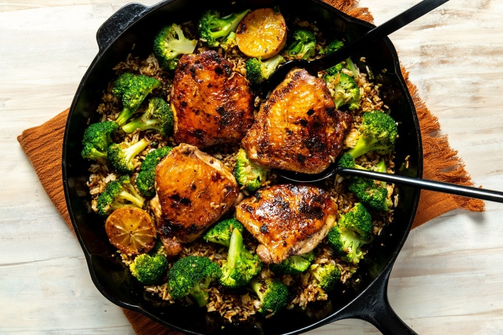

Chipotle Mayo Brick Chicken

Description
This skillet dinner uses the timeless technique of browning chicken under a brick for quick-cooking, unabashedly crispy, juicy, non-splattery chicken. A two-for-one chipotle mayo coats the chicken thighs to flavor and prevent burning, as well as to dip into. Use the rendered chicken fat to cook a side dish of fried rice with broccoli and scallions — or anything else you like with smoky chicken thighs.
Ingredients
- Chicken
- Salt
- Pepper
- Mayo
- Adobo Sauce
- Cumin
- White Rice
Steps
- Bring a medium saucepan of water to a boil. Pat the chicken dry. Cut two slits all the way to the bone on the top of each thigh. Season with the 1/2 teaspoon of the salt and the pepper.
- In a medium bowl, mix together the mayonnaise, chipotles and adobo sauce, cumin and lime zest. Spoon about half of the chipotle mayo into a small bowl, cover and refrigerate until ready to serve. Brush the remaining mayo on skin of the chicken.
- Place the chicken skin side down in the center of a large cast-iron skillet. Set the pan over medium-high heat, and cover the chicken with foil or parchment, pressing each thigh down against the pan. Place something heavy, such as another cast-iron skillet, a few cans or a brick, on top. Cook the chicken until opaque nearly all the way up the sides, 20 to 25 minutes, checking halfway through to make sure the skin isn’t browning too fast. (If it is, lower the heat.)
- When the water comes to a boil, add 1 teaspoon of salt and the rice. Cook, stirring occasionally, for 7 minutes, then add the broccoli and cook an additional 3 minutes, or until the rice is nearly al dente. Drain, rinse with cold water and shake as dry as possible. Set aside while you finish the chicken.
- Remove the brick and foil or parchment from the chicken. Add the lime halves, cut sides down, to the pan. Flip the chicken, and cook until cooked through and the limes are charred, an additional 3 to 4 minutes. The internal temperature of the chicken should register 165 degrees on an instant-read thermometer. If not, remove the lime to a plate and cook the chicken for an additional 5 minutes, then check again.
- Transfer the chicken and limes to a plate, leaving the fat in the pan. Add the scallions to the skillet and stir, scraping up browned bits, until fragrant, about 1 minute. Add the rice and broccoli, stir to coat in the chicken fat, then pat into an even layer. Cook until warmed and starting to crisp on the bottom, 3 to 5 minutes. Taste, and season with additional salt and pepper, if needed. Remove from the heat, and return the chicken and lime to the skillet.
- Serve in the skillet, family-style, squeezing the charred lime over the chicken, with the remaining chipotle mayo on the side.